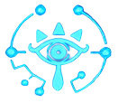
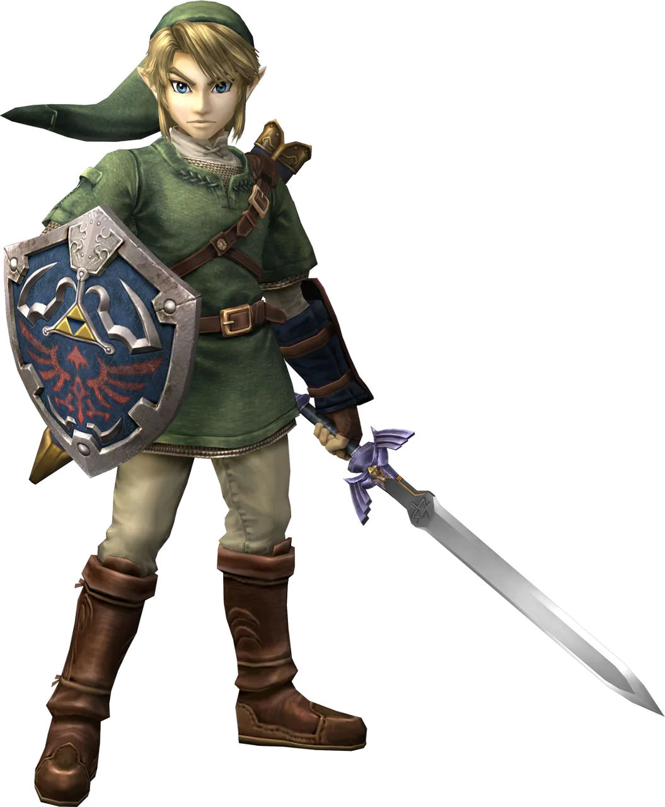
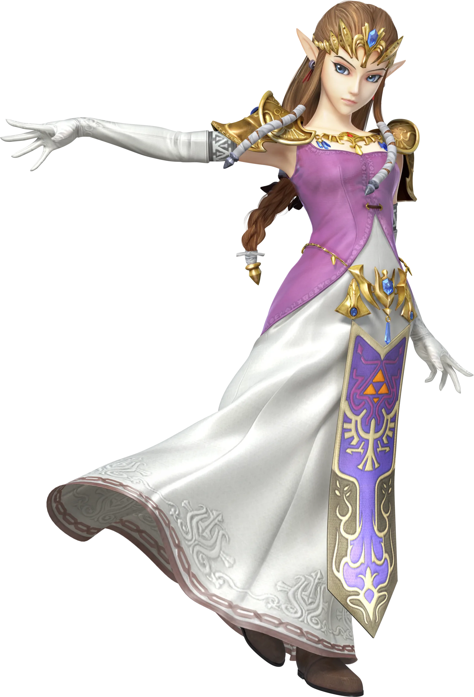
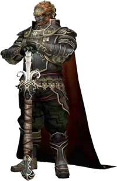
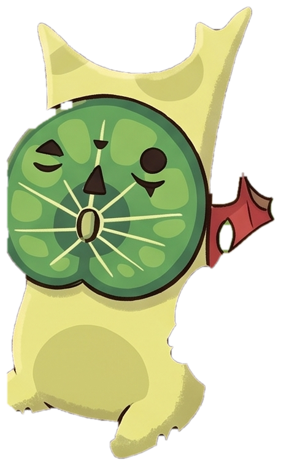
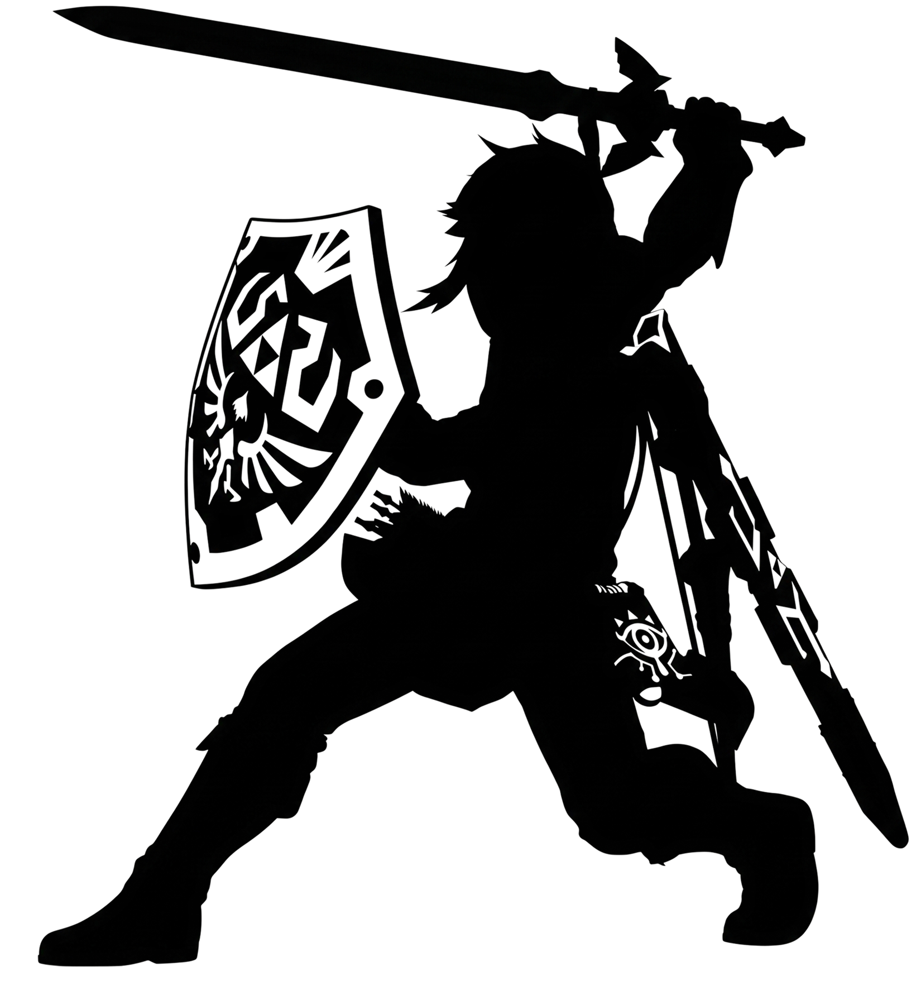

단말에 시커스톤을 가져다 대세요 (클릭)
세계관의 정수이자 게임의 세 기둥 — 탐험, 퍼즐, 전투를 이끄는 세 인물

용기 (Courage) : 탐험
하이랄에 위기가 닥칠 때마다 다른 시대, 다른 모습으로 깨어나는 영원한 용사이자 마스터 소드의 주인. 절벽과 바다, 구름 위 하늘까지 눈앞의 모든 지형을 제한 없이 개척하는 자유로운 용기가 모험의 원동력입니다.

지혜 (Wisdom) : 퍼즐
여신 하일리아의 핏줄을 이은 하이랄 왕국의 공주. 대륙 곳곳에 숨겨진 정교한 물리 법칙과 사당의 수수께끼는 그녀가 상징하는 지혜를 시험합니다. 최신작 《지혜의 투영》에서는 직접 모험의 주인공으로 나섭니다.

힘 (Power) : 전투
겔드족에서 백 년에 한 번 태어나는 남자이자 시대를 넘어 부활하는 마왕 가논의 화신. 필드의 무기와 고대 유물의 능력을 융합한 창의적인 전투로 절대 악에 맞서 하이랄을 수호해야 합니다.
본편의 연대기와 연동되는 호쾌한 무쌍 액션 대서사시
《티어스 오브 더 킹덤》의 과거, 태고의 봉인 전쟁을 그린 최신작. 젤다 공주와 초대 국왕 라울 등 하이랄의 영웅들과 함께 마왕의 대군에 맞서는 무쌍 액션. (Nintendo Switch 2 / 2025.11.6 발매)
《브레스 오브 더 와일드》의 100년 전, 비극적인 대재앙 당시 영걸들이 펼친 대규모 전쟁의 서사를 정밀하게 그려낸 정사 스핀오프.
많은 게이머들이 오해하는
비디오 게임 역사상 오랜 질문,
아닙니다.
하이랄을 달리는 초록 용사의 이름은 링크(Link)입니다.
젤다의 전설 지혜의 투영 (2024년 최신작)
링크마저 사라진 하이랄, 대륙을 집어삼키는 균열의 위기 속에서 마침내 젤다 공주가 검 대신 '지혜의 지팡이'를 들고 모험에 나섭니다. 필드 위의 테이블, 침대, 투석기는 물론 나를 공격하던 마물까지 그대로 복사해 소환하는 '투영' 능력으로, 정답이 하나로 정해지지 않은 나만의 돌파 루트를 개척해 나가는 참신한 탑다운 어드벤처입니다.
희망소비자가격 64,800원 상품 보기Nintendo Switch에서 만나는 엄선된 공식 명작 라인업
숲의 정령 '코로그'는 부끄러움이 많아 사람 눈에 잘 띄지 않습니다. 하이랄 대륙 곳곳에는 900마리의 코로그가 숨어 당신을 기다리고 있어요.
🍃 뛰어다니는 코로그를 클릭해 보세요!
영상으로 먼저 만나는 하이랄의 대서사시

1986년부터 2026년까지 비디오 게임의 역사를 바꾼 10대 명작 라인업
시리즈의 위대한 시작. 최초의 오픈월드 형태와 배터리 세이브 시스템 도입.
빛과 어둠의 평행 세계 교차 시스템을 정립한 2D 탑다운 젤다의 완성형 명작.
코호린트 섬이라는 신비로운 무대와 서정적이고 슬픈 스토리로 사랑받은 수작.
3D 게임의 문법이 된 'Z주목' 시스템 최초 개발. 메타크리틱 99점의 신화.
파격적인 툰쉐이딩 그래픽과 광활한 대양을 항해하는 낭만을 담은 바다의 역사.
울프 변신 기믹을 도입한 시리즈 역사상 가장 묵직하고 리얼한 다크 판타지.
모든 젤다 역사의 기원이자 마스터 소드의 탄생 비화를 다룬 하늘의 연대기.
물리·화학 엔진의 상호작용으로 오픈월드의 개념을 완벽하게 재정의한 시대의 명작.
하늘과 지저로 무대를 넓히고 '울트라핸드' 크래프팅으로 상상력을 현실화한 후속작.
시리즈 최초로 젤다 공주가 단독 주인공으로 나서 '투영'의 힘을 보여준 최신작.